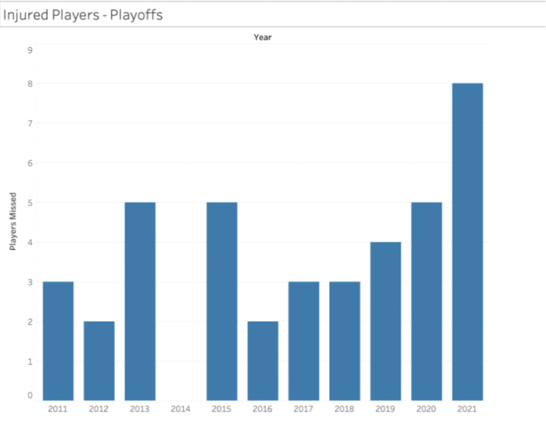
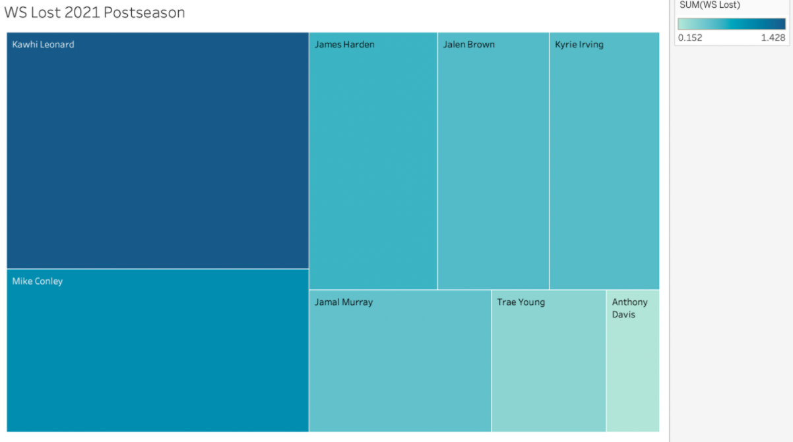
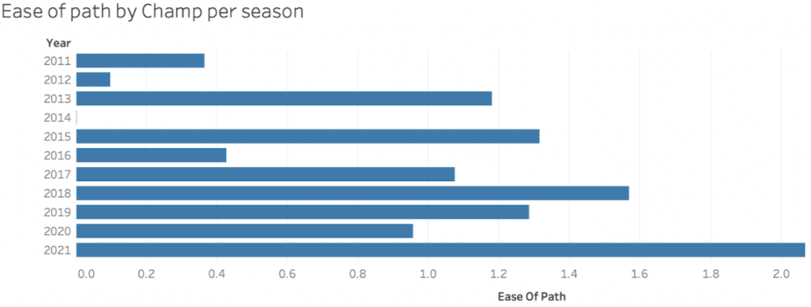

Injury Woes
By Adam Ousherovitch | December 5th, 2021

On first glance, it seemed like the 2021 Milwaukee Bucks had a uniquely clear path to a championship compared to past winners. They were handed a significantly simpler series against the Nets, due to the numerous injuries the Nets sustained. However, we only need to look at the 2019 season, and the Finals injuries of Kevin Durant and Klay Thompson, to see that injuries have drastically altered NBA history.
Many NBA pundits have argued that the Milwaukee Bucks 2021 championship is delegitimized by the unusual degree of injuries that plagued the last NBA postseason. These playoffs, we saw a record-setting eight all stars miss at least one game in a series which their team lost. For reference, here is the amount of all star players that missed games in a losing series over the last ten postseasons.
As we can see, 2021 is an anomaly in this regard. However, does that truly invalidate the Bucks’ championship? To determine that, we need to see if the impact of these injuries is a statistical outlier when compared to past championships.
We want to determine the impact of an injury. To do this, we’ll utilize win shares (WS) per 48 minutes, an advanced statistic that approximates how many wins a player contributes to a given win for his team. This statistic takes into account points, rebounds, and assists, comparing them to league average. Win shares per 48 are given as a decimal and are supposed to signify the proportion of wins that a player causes his team to win. We can multiply a player’s WS during the regular season by postseason games missed to calculate the win shares lost by a player. As an example, let’s calculate the win shares lost by Kyrie Irving in the 2021 postseason due to his ankle injury. Kyrie averaged .189 win shares per 48 minutes of playing time in the 2021 regular season. He missed 3 games during the Nets’ series against the Bucks. This means that the nets lost .189 times 3, or .567, win shares. This implies that the Nets lost .567 more games than they otherwise would have if Kyrie played.
Now here are the WS lost for all 8 All-Stars who missed time last postseason.
To calculate how much easier the path to a title was due to injury, we can add up all of the win shares lost by All-Star opponents of a champion. This includes both direct and indirect opponents.
Direct opponents are players that missed games in a series against the champion. For direct opponents, we will only calculate win shares lost based on games missed against the champion.
Indirect opponents are those that could have played the champion if not for injury. For example, the Lakers in the 2021 NBA season were eliminated in the first round because of Anthony Davis’ injury. If not for this, they potentially could have advanced to the finals and posed a major threat to the Bucks. On average, we can assume that indirect opponents had a 50% chance to win the series they lost in. After that, they would, similarly, have had a 50% chance of winning against the champion on average. So, we should add a quarter of the win shares lost by indirect opponents in the series in which they lost to the total win shares lost by direct opponents.
Now, here is the statistical ease of path for champions in the last 10 years:
As we can see, the Bucks did indeed have an easier path than the average champion. Whether or not this invalidates their title run is subjective. However, the data suggests this take isn’t entirely unfounded. Whether you believe that the Bucks are rightfully the kings of the NBA or whether external factors propelled their championship run, the Milwaukee Bucks still reign supreme. This season, however, they have the opportunity to prove their legitimacy.
.gif)